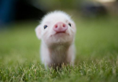

Хрюша
Хрю́ша — поросёнок, кукольный персонаж детской телепередачи «С добрым утром, малыши!» и «Спокойной ночи, малыши!».
Хрюша
В 1990-е годы Хрюша был также одним из постоянных участников телепередачи Кирилла Немоляева «Нержавеечка», посвящённой тяжёлой музыке. Одетого в косуху поросёнка озвучивала, как и в «Спокойной ночи, малыши!», Наталья Державина